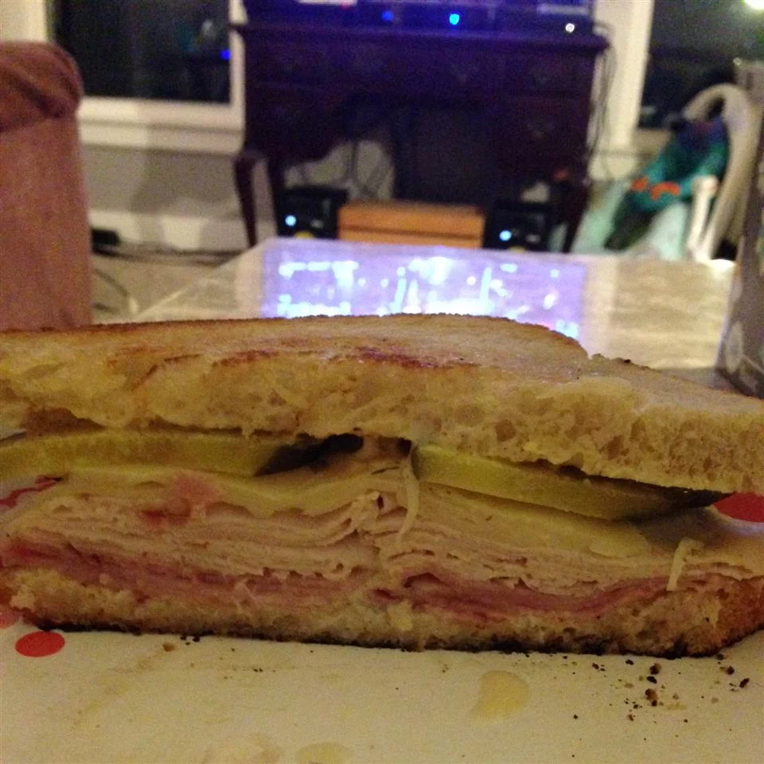

Sammich

Yes, I know it's not spelled correctly, however this is no ordinary Sandwich. A sandwich is boring. This is a SAMMICH!
Ingredients
- Sourdough bread (2 slices)
- Thin slices of raw meat (either chicken or turkey)
- Bacon
- Crispy lettuce
- Cheese slice
Steps
- Toast the sourdough bread on one side only
- Lightly fry the chicken/turkey along with the bacon
- Butter the toasted side of the bread (the toasted sides with be on the inside of the sandwich)
- Lay the lettuce on one slice of toast, then the bacon...
- then add the chicken/turkey followed by the cheese slice
- Enjoy. Don't share it. It's too good for that